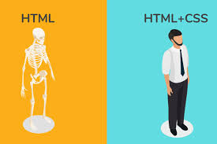
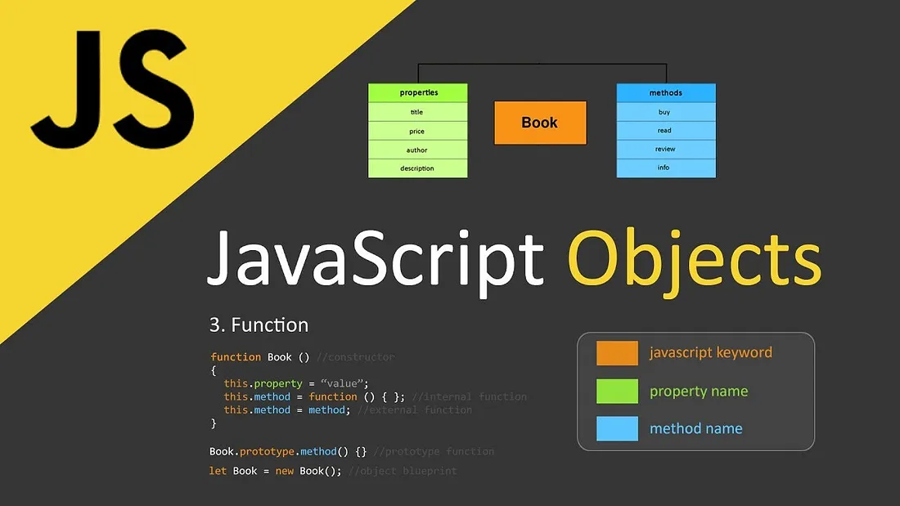

SHANITAH,S SOCIAL SKILLS HUB
Welcome to my corner of the web!
I'm a highly motivated and dedicated software engineer with a passion for coding. My social skills have helped me connect with people from diverse backgrounds and build strong relationships. I'm always eager to learn new skills and inspire others to pursue their dreams in technology.
- Effective Communication: My Top Tips (July 25, 2024)
- Empathy in Action: How I Connect with Others (July 20, 2024)
- Navigating Conflicts with Tact and Diplomacy (July 15, 2024)
Social Skills Categories
- Communication
- Empathy
- Conflict Resolution
- Teamwork
- Adaptability
I'm eager to learn more about these skills and how they can help me in my professional and personal lives. If you're interested in connecting with me, please feel free to reach out. I look forward to hearing from you!
HTML
"I still remember the day I decided to learn HTML - it was like unlocking a secret code to building websites! At first, it seemed daunting, but as I started with basic tags like ,
, and , I gained confidence. I practiced creating simple web pages, adding headings, paragraphs, and links. Soon, I was experimenting with tables, forms, and even embedding images and videos. With each new skill, my excitement grew, and I realized how empowering it was to bring my ideas to life online. Now, I'm hooked on learning more about web development and can't wait to see where this skill takes me!"CSS
"Wow, my journey with CSS has been a game-changer! I've learned how to transform basic HTML structures into visually stunning websites. I started with the fundamentals - selectors, properties, and values - and soon discovered the magic of styling with colors, fonts, and layouts. I mastered the box model, and now I can precisely control margins, padding, and borders. I've also dived into advanced topics like CSS Flexbox and Grid, which have made creating responsive and dynamic designs a breeze. And let's not forget about the power of pseudo-classes and animations - it's amazing how much life I can add to a website with just a few lines of code! CSS has opened my eyes to the endless possibilities of web design, and I'm excited to continue exploring its capabilities."
BOOTSTRAP
Bootstrap has been a total revelation! I've learned how to build responsive, mobile-first websites in no time. I started with the basics - understanding the grid system, containers, and rows - and soon I was creating layouts that adapt seamlessly to different screen sizes. I've mastered the use of pre-built CSS and HTML components, like navigation bars, alerts, and modals, which save me so much time and effort. I've also discovered the power of Bootstrap's utility classes, which make styling and customizing elements a breeze. And with Bootstrap's JavaScript plugins, I can add interactive features like carousels, accordions, and tooltips with ease. What I love most about Bootstrap is how it simplifies front-end development, allowing me to focus on creating amazing user experiences without getting bogged down in tedious coding. It's amazing how much I can accomplish with Bootstrap - it's definitely a game-changer in my web development journey!
JAVASCRIPT
I've learned how to build interactive, dynamic websites with JavaScript. I started with the basics - understanding event listeners, DOM manipulation, and functions - and soon I was creating applications that respond to user actions, update the UI, and communicate with a server. I've mastered the use of libraries like jQuery, Bootstrap, and React, which make building complex applications a breeze. I've also discovered the power of JavaScript's asynchronous programming, which allows me to write code that waits